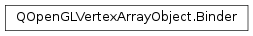

QOpenGLVertexArrayObject.Binder¶
Detailed Description¶
The
QOpenGLVertexArrayObject.Binderclass is a convenience class to help with the binding and releasing of OpenGL Vertex Array Objects.
QOpenGLVertexArrayObject.Binderis a simple convenience class that can be used to assist with the binding and releasing ofPySide2.QtGui.QOpenGLVertexArrayObjectinstances. This class is toPySide2.QtGui.QOpenGLVertexArrayObjectasPySide2.QtCore.QMutexLockeris toPySide2.QtCore.QMutex.This class implements the RAII principle which helps to ensure behavior in complex code or in the presence of exceptions.
The constructor of this class accepts a
PySide2.QtGui.QOpenGLVertexArrayObject(VAO) as an argument and attempts to bind the VAO, callingQOpenGLVertexArrayObject.create()if necessary. The destructor of this class callsQOpenGLVertexArrayObject.release()which unbinds the VAO.If needed the VAO can be temporarily unbound with the
PySide2.QtGui.QOpenGLVertexArrayObject::Binder.release()function and bound once more withPySide2.QtGui.QOpenGLVertexArrayObject::Binder.rebind().
-
class
PySide2.QtGui.QOpenGLVertexArrayObject.Binder(v)¶ Parameters: v – PySide2.QtGui.QOpenGLVertexArrayObjectCreates a
QOpenGLVertexArrayObject.Binderobject and bindsvby callingQOpenGLVertexArrayObject.bind(). If necessary it first callsQOpenGLVertexArrayObject.create().
-
PySide2.QtGui.QOpenGLVertexArrayObject.Binder.rebind()¶ Can be used to rebind the associated vertex array object.
See also
PySide2.QtGui.QOpenGLVertexArrayObject::Binder.release()
-
PySide2.QtGui.QOpenGLVertexArrayObject.Binder.release()¶ Can be used to temporarily release the associated vertex array object.
See also
PySide2.QtGui.QOpenGLVertexArrayObject::Binder.rebind()
© 2018 The Qt Company Ltd. Documentation contributions included herein are the copyrights of their respective owners. The documentation provided herein is licensed under the terms of the GNU Free Documentation License version 1.3 as published by the Free Software Foundation. Qt and respective logos are trademarks of The Qt Company Ltd. in Finland and/or other countries worldwide. All other trademarks are property of their respective owners.